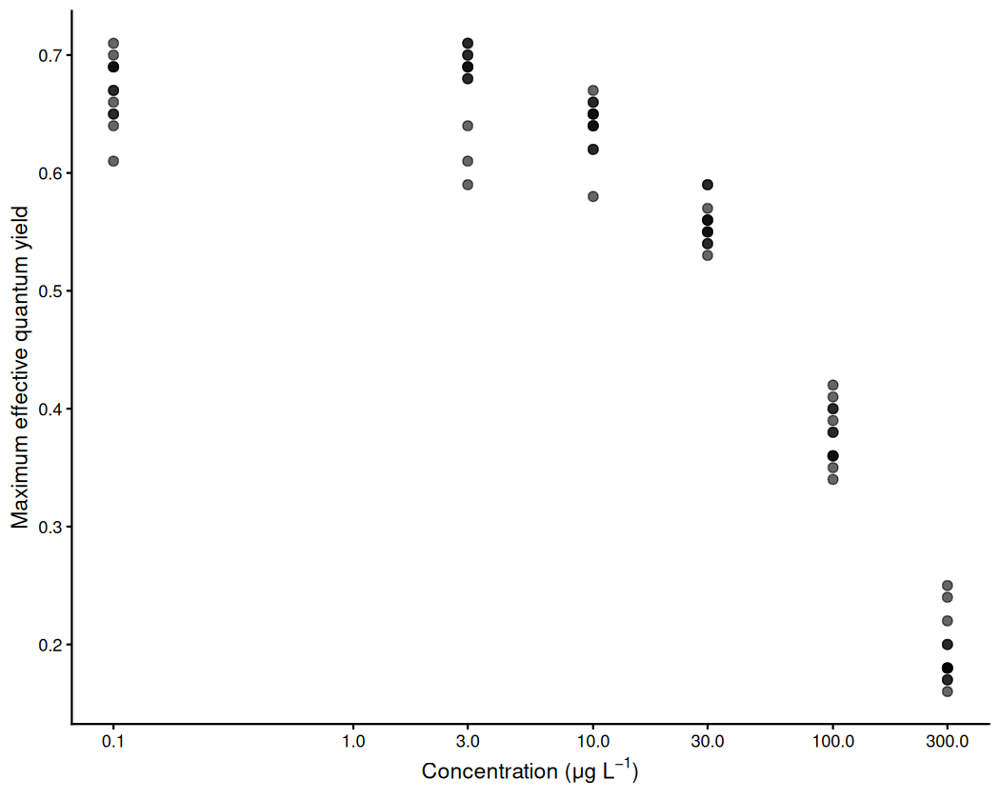
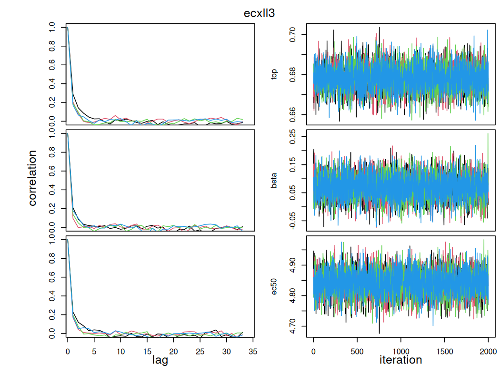
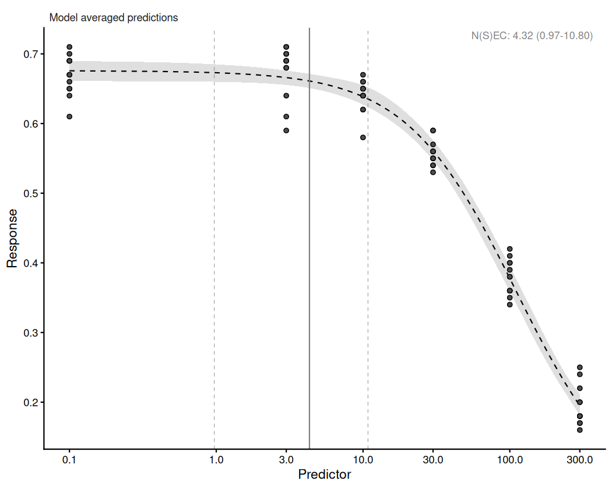
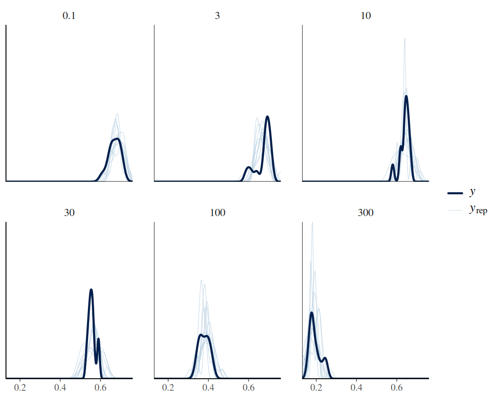
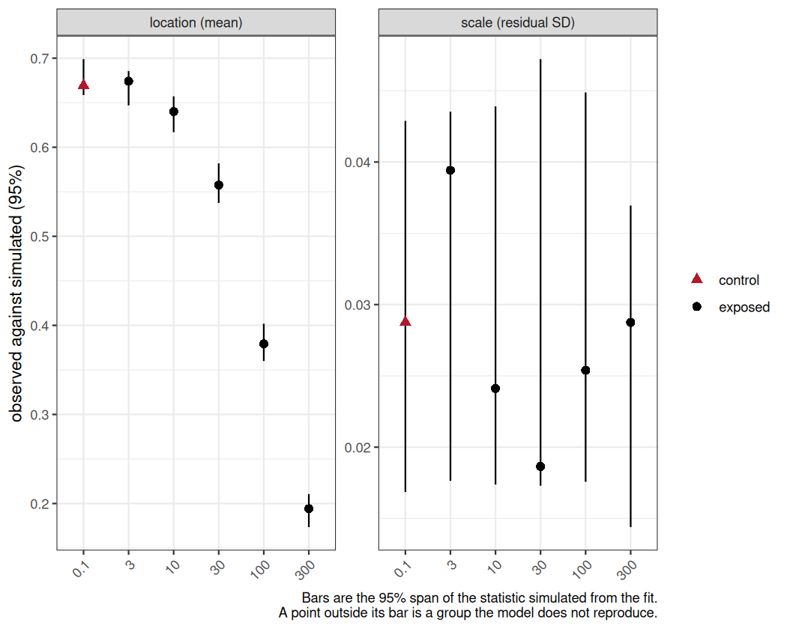
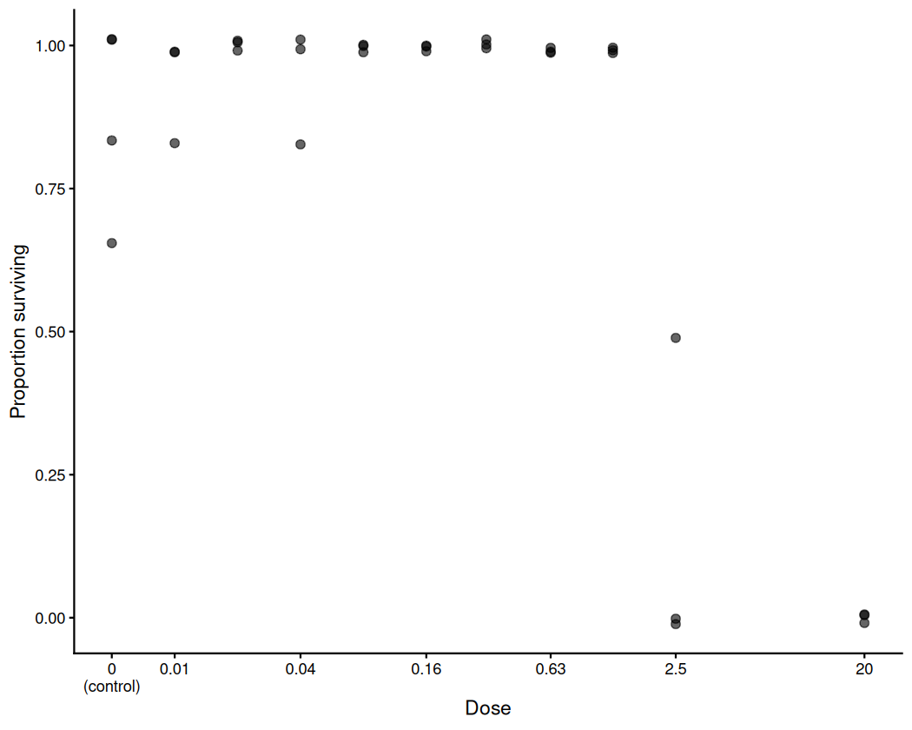

The other vignettes each explain one part of bayesnec:
what the model set is, what a bayesmanecfit is, how priors
are built, how to handle a two-block response. One analysis is run here
from data to reportable estimate, in the order the steps occur.
The workflow is:
A prior check belongs between steps 2 and 3. Priors
covers check_priors() and the construction of the
defaults.
Convergence is what a Bayesian fit is usually judged on, and it is
not the only thing that can be wrong. rhat(),
check_chains() and check_sampling() ask
whether the sampler explored the posterior. loo and
waic rank the candidate equations against one another. None
of them asks whether the variability the fitted model implies matches
the variability in the data, and a threshold estimate depends on that
assumption more than on any other.
NSEC depends on it most directly. nsec() sets
its reference at a quantile of the posterior of the control mean, and
the width of that posterior is set by the dispersion the fit estimated
at the control. A model simulating more variability at the control than
the data show places the reference lower, so the curve crosses it
further along and the reported concentration is higher and less
protective. A model simulating less variability places the reference
higher and returns a lower concentration. The direction is not known in
advance, and no convergence diagnostic reveals it. Single
model usage makes the same point for the choice between
constant and non-constant dispersion. ECx depends on it less, being read
from the fitted curve relative to that curve’s own asymptotes: an error
in the variance widens or narrows its interval rather than relocating
it.
One statistic for the whole fit does not detect this. Every family
with a free dispersion parameter — gaussian,
Gamma, negbinomial, Beta and
beta_binomial — estimates that parameter from the same
residuals such a statistic summarises. The parameter absorbs the
discrepancy, so the fit reports a ratio near 1 while simulating the
wrong spread at the concentrations that determine the estimate. The
check is therefore made within concentration groups, which is what
check_fit() does.
Multi
model usage notes that there is little harm in leaving a poorly
shaped model in the set with a low weight. That holds for shape
and it does not hold for convergence. A model that has not sampled
contributes to the averaged prediction on the strength of a posterior
the sampler never explored, and its weight is computed from that same
posterior, so the weight is no evidence that keeping it is safe.
Removing it changes the candidate set, and amend() then
recomputes the weights across what remains rather than rescaling those
retained, so the reported N(S)EC changes with it.
Which models a screen removes is not predictable before it is run, and the reasons differ between them. An equation given too few draws, an equation whose posterior the sampler cannot traverse, and an equation the design does not support are all reported as the same value in the same column. The right response to each is different.
Steps 1 to 5 are worked in full on one dataset. A count response follows, for which the family question and the sampler screen both take a different form.
The threshold estimates themselves — NEC, NSEC, ECx, and the model-averaged N(S)EC reported when a set mixes both kinds — are defined in Model details, together with the candidate equations.
The herbicide data record the maximum effective quantum
yield of coral symbionts exposed to each of seven herbicides (Jones and Kerswell 2003).
?herbicide documents the columns and the provenance of the
response. simazine is the series worked here.
data(herbicide)
simazine <- herbicide[herbicide$herbicide == "simazine", ]
head(simazine)
#> herbicide concentration fvfm
#> 6 simazine 0.1 0.69
#> 13 simazine 0.1 0.71
#> 20 simazine 0.1 0.66
#> 27 simazine 0.1 0.65
#> 34 simazine 0.1 0.67
#> 41 simazine 0.1 0.64The response, fvfm, is a ratio of chlorophyll
fluorescence yields. It is bounded by 0 and 1 and it is continuous,
which is the Beta case rather than the
binomial one: a proportion of this kind is not a count of
successes out of a known number of trials, and there is no denominator
to supply.
conc_breaks <- c(0.1, 1, 3, 10, 30, 100, 300)
ggplot(simazine, aes(x = concentration, y = fvfm)) +
geom_point(size = 2, alpha = 0.6) +
scale_x_continuous(transform = "log", breaks = conc_breaks) +
labs(x = expression(paste("Concentration (", mu, "g ", L^-1, ")")),
y = "Maximum effective quantum yield") +
theme_classic()
plot of chunk exmp9-data
The first step of any analysis is to look at the data before fitting anything. The response is flat across the two lowest concentrations, declines from 3 onwards, and is still falling at the highest concentration tested.
The series has 6 distinct concentrations. That is the number of points from which a curve’s shape has to be identified, and it is a constraint on which equations the design can support.
The curve does not reach a floor. Mean yield at the highest concentration is 0.194 against 0.669 at the lowest, so the decline is incomplete and the lower asymptote of any four-parameter equation is estimated by extrapolation rather than observation.
No value lies on a boundary, which matters because a
Beta response is supported on the open interval (0, 1), so
a value recorded as exactly 0 or 1 lies outside the family’s support.
bayesnec substitutes for both: a zero becomes one tenth of
the smallest non-zero value, which is relative to the scale of the
response, and a one is reduced by an absolute 0.001. A series with
several concentrations at a boundary is then being modelled through that
substitution rather than as recorded.
range(simazine$fvfm)
#> [1] 0.16 0.71simazine reaches neither boundary. Several of the other
herbicides in this dataset do: irgarol records ten zeros,
eight of its twelve replicates at the highest concentration, so the
family cannot be chosen without inspecting the response. Where zeros are
part of the process rather than a recording floor, see Hurdle
and zero-inflated concentration-response models, which covers
the families that model them explicitly.
Choosing a family is a statement about what kind of quantity the
response is: the values it can take, the bounds it cannot cross, and how
its variance behaves as its mean changes. A proportion measured on a
continuous scale, a count of successes out of a known number of trials,
and a strictly positive measurement are three different kinds of
quantity, and each has a family that can represent it. Single
model usage sets out the families bayesnec
supports and what each assumes.
The question therefore takes a different form for each kind of
response, and bayesnec provides a different check for each.
Here the response is a continuous proportion, so the family is
Beta, and the two things to establish are whether any value
lies outside its support and whether its variance needs a free
parameter.
Beta estimates a dispersion parameter, phi,
from the data. There is therefore no over-dispersion decision to take:
the family already has a free parameter for the spread, and the fit will
estimate it. dispersion() is defined only for
poisson and binomial, the two families whose
variance is fixed by the mean, and returns an empty vector otherwise.
For those families a pre-fit screen is available, and it is run on the count response.
What has to be checked is the one thing Beta cannot
accommodate, which is a value outside its support.
bnec_record() reports after the fit whether anything was
altered.
fam <- Beta(link = "identity")bnec() sets link = "identity" by default on
every family, so that top, bot and
nec are estimated on the scale of the response and remain
directly interpretable. It is written out above for clarity; passing the
family as a bare string has the same effect. A user who supplies a
family object with a different link — Beta(link = "logit")
— overrides that default, and the model then fits a non-linear curve to
the logit of the mean rather than to the mean. bnec()
accommodates this by dropping the equations that are invalid on a link
scale, but the parameters are no longer on the response scale. See Single
model usage.
The concentrations run from 0.1 to 300, a factor of 3000, in roughly even steps on a logarithmic scale. The predictor is logged in the formula.
The predictor enters the equations directly, so a transform changes
the shape being fitted and not merely the axis: the same equation
describes a different curve in concentration and in
log(concentration). The default priors are also scaled from
the predictor, so a transform rescales them. Neither consideration
settles the question in general, and which scale samples better on a
given dataset is an empirical matter. Here the series was designed as a
logarithmic dilution, and a logarithm is what makes its steps even.
A logged predictor spanning -2.3 to 5.7 takes negative values, which
excludes the equations that raise the predictor to a fractional power.
And every estimate is returned on the logged scale unless
xform is supplied.
The whole decline set is fitted in one call, under the
family chosen in step 1.
fit_reduced <- bnec(fvfm ~ crf(log(concentration), model = "decline"),
data = simazine, family = fam,
iter = 4000, chains = 2, seed = 17)The sampler settings above are deliberately below
bnec()’s defaults, and that is a decision made for this
document rather than advice.
Compare the retained draws and not iter.
iter counts warmup as well as sampling, and the fraction
discarded is a choice each package makes for itself.
bayesnec takes chains = 4 and
iter = 1e4, and sets warmup to
floor(iter / 5) * 4, discarding four fifths and retaining
8000 draws. The call above sets iter to 4000 with two
chains, and the same warmup rule leaves 1600. The two iter
values differ by a factor of 2.5 and the draws they retain by a factor
of 5. For comparison, brms discards half rather than four
fifths, so its own defaults of iter = 2000 over four chains
retain 4000 — more than this call, from a quarter of the iterations. A
number of iterations means nothing until the warmup rule and the chain
count are stated beside it.
These data are well behaved at the defaults, and every equation the design supports passes the screen there, so a fit made at the defaults produces no screen failure to examine. Running short guarantees that some equations fail, which is what makes steps 3 and 5 a demonstration rather than an assertion. The settings are raised to the defaults in step 3, and every estimate reported in step 5 comes from the fit made there.
Running short is done here to produce a screen failure to examine, and is not something an analysis should copy. Where a fit is genuinely marginal, two arguments are the ones to reach for:
iter and warmup. A model with a poorly
identified parameter may need more draws. Raise iter first
when Rhat is marginal or the effective sample size is low.control = list(adapt_delta = 0.99, max_treedepth = 12).
Raise adapt_delta when there are divergent transitions;
raise max_treedepth when the sampler reports hitting it.
Both increase runtime and neither corrects a misspecified model.model = "decline" requests the equations that describe a
declining response, of which there are 14 currently in
bayesnec. The remaining equations in the package describe
hormesis, a response that rises above the control before it falls. There
is no evidence of hormesis in these data, so they are not considered
here. Two mechanisms then reduce it from this original set. Some
equations are excluded before fitting, because they are invalid for the
family or the predictor; Model
details sets out the equations and the rules that govern them.
Others are attempted and fail to fit, which happens with complex
non-linear models, and particularly with those that have many
parameters.
bnec_record() reports both, so neither has to be
reconstructed from the fitted object:
rec <- bnec_record(fit_reduced)
rec$excluded
#> model
#> 1 neclin
#> 2 ecxlin
#> 3 ecxsigm
#> reason
#> 1 decays by subtraction, so its mean is unbounded below for beta with an identity link
#> 2 decays by subtraction, so its mean is unbounded below for beta with an identity link
#> 3 raises the predictor to a fractional power, which is undefined for negative predictor values
rec$attempted
#> [1] "nec3param" "nec4param" "ecxexp" "ecx4param" "ecxwb1" "ecxwb2" "ecxwb1p3" "ecxwb2p3"
#> [9] "ecxll5" "ecxll4" "ecxll3"requested is partitioned exactly by
attempted and excluded$model. An equation that
was attempted and failed to fit stays in attempted.
Two rules apply here. neclin and ecxlin
decay by subtraction rather than by an exponential factor, so their
fitted mean is unbounded below and cannot be held inside the (0, 1)
interval a Beta mean occupies under an identity link. And
the predictor is log(concentration), which is negative
below a concentration of 1, so the equations that raise the predictor to
a fractional power cannot be evaluated; ecxsigm is among
them. ?models sets out these rules and the others.
failed_models() names the equations that were attempted
and did not fit, and records the priors and initial values each was
given, which are built inside bnec() and otherwise
unrecoverable:
names(failed_models(fit_reduced))
#> NULLEvery equation the design admits was fitted at these settings, so there is nothing to report here.
rec$substitutions
#> NULLsubstitutions reports the changes
check_data() made to the response because the family cannot
represent a value as recorded. It is NULL here, which is
the evidence for the boundary check in step 1: the response was fitted
as recorded, with nothing shifted off a boundary. On a series that does
reach 0 or 1 this element names each altered value, so a methods section
can state what was modelled rather than leaving a reader to assume it
was the data as measured.
A methods section has to state the equations requested, those
excluded before fitting and why, and any change made to the response.
bnec_record() returns each of them, so a knitted document
records them without depending on console output.
summary() reports the set as a whole.
summary(fit_reduced)
#> Object of class bayesmanecfit
#>
#> Family: beta
#> Links: mu = identity
#>
#> Number of posterior draws per model: 1600
#>
#> Model weights (Method: pseudobma_bb_weights):
#> waic wi
#> nec3param -274.13 0.00
#> nec4param -270.07 0.00
#> ecxexp -97.54 0.00
#> ecx4param -303.78 0.15
#> ecxwb1 -303.35 0.12
#> ecxwb2 -294.78 0.02
#> ecxwb1p3 -294.45 0.02
#> ecxwb2p3 -298.19 0.05
#> ecxll5 -303.81 0.15
#> ecxll4 -304.13 0.18
#> ecxll3 -304.92 0.31
#>
#>
#> Summary of weighted N(S)EC posterior estimates:
#> NB: Model set contains a combination of ECx and NEC
#> models, and is therefore a model averaged
#> combination of NEC and NSEC estimates.
#> Estimate Q2.5 Q97.5
#> N(S)EC 1.44 0.22 2.41
#>
#>
#> Bayesian R2 estimates:
#> Estimate Est.Error Q2.5 Q97.5
#> nec3param 0.96 0.00 0.96 0.96
#> nec4param 0.96 0.00 0.96 0.96
#> ecxexp 0.48 0.06 0.35 0.57
#> ecx4param 0.98 0.00 0.97 0.98
#> ecxwb1 0.98 0.00 0.97 0.98
#> ecxwb2 0.97 0.00 0.97 0.97
#> ecxwb1p3 0.97 0.00 0.97 0.97
#> ecxwb2p3 0.97 0.00 0.97 0.97
#> ecxll5 0.98 0.00 0.97 0.98
#> ecxll4 0.98 0.00 0.97 0.98
#> ecxll3 0.98 0.00 0.97 0.98wi is the model weight: the share of the model-averaged
prediction each candidate contributes, summing to one across the set.
The weights come from PSIS-LOO — loo_model_weights()
consumes the loo objects brms computes for
each fit — and where a model reports Pareto k values above 0.7
for a few observations, brms warns and those warnings are
suppressed in the chunk options. The weights are usable and the
estimates behind them are flagged as unreliable at those points, which
belongs in a methods statement alongside the weights themselves.
Every equation in the fitted set produced draws; the ones that did
not are in failed_models(). The diagnostics here establish
whether those draws describe the posterior adequately. Whether a model
fits the data is a separate question, answered in step 4.
check_sampling() reports per candidate model, so the
whole set is screened in one call rather than model by model.
check_sampling(fit_reduced)
#> model max_rhat min_ess min_ess_ratio n_divergent failed
#> 1 nec3param 1.001990 642.73715 0.40171072 0 FALSE
#> 2 nec4param 1.004450 445.24592 0.27827870 0 FALSE
#> 3 ecxexp 1.006129 747.36202 0.46710126 0 FALSE
#> 4 ecx4param 1.010773 359.18327 0.22448954 0 TRUE
#> 5 ecxwb1 1.011074 378.43216 0.23652010 0 TRUE
#> 6 ecxwb2 1.010926 484.52274 0.30282671 0 TRUE
#> 7 ecxwb1p3 1.001416 722.29490 0.45143432 0 FALSE
#> 8 ecxwb2p3 1.002646 772.37795 0.48273622 0 FALSE
#> 9 ecxll5 1.015624 57.81288 0.03613305 33 TRUE
#> 10 ecxll4 1.005792 266.89352 0.16680845 0 TRUE
#> 11 ecxll3 1.003542 785.63696 0.49102310 0 FALSEThe table gives one row per fitted model, with three diagnostics: the
largest Rhat, the smallest effective sample size, and the number of
divergent transitions. Each is compared against a cutoff, and
failed is TRUE where any of the three is
missed.
The cutoffs are arguments to check_sampling() and can be
changed. The Rhat default of 1.01 and the ESS default of 400 follow
published recommendations (Vehtari et al.
2021); the divergence default of 10 does not. Stan’s own guidance
is that any divergence means the sampler failed to explore the
posterior. The default of ten is a package convention rather than a
published recommendation: these non-linear models commonly produce a
small number of divergent transitions near a parameter boundary, as
described in ?check_sampling. The value 1.01 is the
bayesnec default throughout: rhat(),
summary() and check_sampling() agree on
it.
Read min_ess rather than min_ess_ratio when
deciding. The 400 is an absolute floor, below which the Rhat and ESS
estimates are themselves unreliable, and it corresponds to 100 draws per
chain at the four chains bnec() fits by default. Both the
ESS and the divergence cutoffs are absolute counts, and the number of
draws changes what each of them demands — in opposite directions. At the
1600 draws retained here a model must reach an efficiency ratio of 0.250
to clear 400, against 0.050 at the default 8000, so the ESS cutoff is
harder to clear at these settings. Ten divergent transitions, on the
other hand, is 0.62 per cent of the retained draws here and 0.125 per
cent at the default. At an equal divergence rate the same fit therefore
produces more of them at the defaults, and the divergence cutoff is
harder to clear there. Neither setting is uniformly stricter, and a
screen result is therefore a property of the settings as much as of the
model. It is always important to state the settings used.
The ratio is reported beside the count because it answers a different
question from the one the cutoff answers: it separates a model that
cleared 400 because many draws were taken from one that cleared it
efficiently, and it is what reveals a heavily thinned fit.
?check_sampling sets out the distinction. The decision is
taken on min_ess; the ratio is read alongside it.
The three kinds of failure are distinguished by which thresholds an equation missed, and whether divergent transitions are among them.
cs <- check_sampling(fit_reduced)
failed <- cs[cs$failed, c("model", "max_rhat", "min_ess", "n_divergent")]
failed
#> model max_rhat min_ess n_divergent
#> 4 ecx4param 1.010773 359.18327 0
#> 5 ecxwb1 1.011074 378.43216 0
#> 6 ecxwb2 1.010926 484.52274 0
#> 9 ecxll5 1.015624 57.81288 33
#> 10 ecxll4 1.005792 266.89352 0An equation that misses the effective sample size or Rhat threshold
with no divergent transitions has been sampled from a posterior the
sampler could traverse. It was not sampled for long enough to describe
that posterior, and both diagnostics are themselves estimated less
precisely from fewer draws. Refitting with a higher iter is
what such an equation needs, and it is expected to pass once it has
them, so excluding it on this evidence would be premature.
Divergent transitions are different, because they describe the posterior rather than the run. A divergence is recorded when the sampler’s trajectory through parameter space goes numerically unstable, which happens where the posterior has curvature too sharp for the step size adapted during warmup. Taking more draws samples the same surface for longer and does not smooth it. Where such an equation is also the most heavily parameterised in the set, the usual explanation is that the design does not support it:
n_par <- vapply(cs$model, function(m) length(names(show_params(m)[[1]]$pforms)),
integer(1))
data.frame(model = cs$model, parameters = n_par, failed = cs$failed,
row.names = NULL)
#> model parameters failed
#> 1 nec3param 3 FALSE
#> 2 nec4param 4 FALSE
#> 3 ecxexp 2 FALSE
#> 4 ecx4param 4 TRUE
#> 5 ecxwb1 4 TRUE
#> 6 ecxwb2 4 TRUE
#> 7 ecxwb1p3 3 FALSE
#> 8 ecxwb2p3 3 FALSE
#> 9 ecxll5 5 TRUE
#> 10 ecxll4 4 TRUE
#> 11 ecxll3 3 FALSEecxll5 has 5 curve parameters, the most of any equation
in this set, and the Beta dispersion parameter
phi is estimated alongside them. The series has 6 distinct
concentrations. The parameter that distinguishes ecxll5
from ecxll4 is f, an exponent governing the
asymmetry of the curve, and asymmetry is identified from the shape of
the shoulder, which a series of 6 concentrations with an incomplete
lower limb does not resolve. Adjusting the settings further to retain an
equation in that position does not address the problem: the fit is not
failing because it was run badly, but because the experiment does not
contain the information the equation needs. Report it as excluded, and
say why.
Where an equation’s Rhat or effective sample size sits at the threshold, which side of it the equation falls on is sensitive to the seed, and another run may place it on the other side. Any threshold applied to an estimated quantity behaves this way. It is why the thresholds have to be reported with the result, and why the screen’s message names every threshold an equation missed rather than only the first.
Only models that pass the sampler diagnostics are retained. The screen reads the sampler and nothing else: whether an equation reproduces the data is a separate question, and removing an equation for that silently would hide the discrepancies the fit checks exist to show.
screened_reduced <- screen_models(fit_reduced)
#> Dropping 5 of 11 candidate models that failed the sampler screen:
#> - ecx4param: Rhat 1.011, ESS 359.2
#> - ecxwb1: Rhat 1.011, ESS 378.4
#> - ecxwb2: Rhat 1.011
#> - ecxll5: Rhat 1.016, ESS 57.8, 33 divergent transitions
#> - ecxll4: ESS 266.9
#> Fitted models are: nec3param nec4param ecxexp ecxwb1p3 ecxwb2p3 ecxll3screen_models() runs the same diagnostics as
check_sampling(), drops what failed, and reports which
models were removed and why: one line per model, naming every threshold
it missed rather than only the first. An exclusion step that leaves no
record is not reproducible, which is why the message is on by default
and why quiet = TRUE, which suppresses it, should not be
used in an analysis that will be reported.
If every candidate fails, screen_models() stops with an
error listing the reasons rather than returning a meaningless average,
which signals a return to step 2 rather than a loosened threshold. If
none fails, it says so and returns the set unchanged.
amend() does the work, and it is the only route by which
a model leaves a bayesmanecfit. The weights of a screened
set therefore have to be read from the screened fit rather than rescaled
by hand.
The screen has identified the equations that did not sample
adequately. For those that reported no divergent transitions, the remedy
is the one step 2 deferred: fit again at bnec()’s
defaults.
fit <- bnec(fvfm ~ crf(log(concentration), model = "decline"),
data = simazine, family = fam, seed = 17)
check_sampling(fit)
#> model max_rhat min_ess min_ess_ratio n_divergent failed
#> 1 nec3param 1.001419 3154.473 0.3943091 0 FALSE
#> 2 nec4param 1.001943 1743.866 0.2179833 3 FALSE
#> 3 ecxexp 1.000742 3681.209 0.4601511 0 FALSE
#> 4 ecx4param 1.001910 2176.799 0.2720998 0 FALSE
#> 5 ecxwb1 1.000661 1868.897 0.2336121 0 FALSE
#> 6 ecxwb2 1.001944 1554.556 0.1943195 13 TRUE
#> 7 ecxwb1p3 1.001560 3783.128 0.4728910 0 FALSE
#> 8 ecxwb2p3 1.000465 3772.512 0.4715640 0 FALSE
#> 9 ecxll4 1.000844 2147.015 0.2683769 0 FALSE
#> 10 ecxll3 1.000374 3507.633 0.4384542 0 FALSE
names(failed_models(fit))
#> [1] "ecxll5"Of the 5 equations the screen removed at the reduced settings, 3 now pass, on the same data and the same priors, because they were given more draws. Their failures were failures of the run, and more draws corrected them.
The screen still removes ecxwb2, and on divergent transitions rather than on Rhat or effective sample size, which are estimated more precisely from more draws. This is the second kind of failure, the one that describes the posterior rather than the run: more sampling does not change the curvature the sampler could not traverse. The divergence cutoff is an absolute count, so a longer run reports proportionally more divergences at an unchanged rate — raising the settings makes this failure easier to see, not harder.
And ecxll5 now fails to fit at all. More sampling did not make it fit, and would not be expected to: an equation with more free parameters than the design can determine has a posterior that is flat in some direction, and sampling a flat direction for longer does not locate a maximum that is not there. This is the third kind of failure, the one the parameter count anticipated.
The priors and initial values ecxll5 was given are
retained on the failed fit, and are the starting point for an adjustment
if one is wanted, as ?failed_models sets out:
f <- failed_models(fit)[[1]]
f$prior # the priors that failed
# Widen the prior that pinned the fit, then retry with the edited model.
new_prior <- f$prior
new_prior$prior[new_prior$nlpar == "beta"] <- "normal(0, 5)"
bnec(fvfm ~ crf(log(concentration), model = names(failed_models(fit))[1]),
data = simazine, family = fam, prior = new_prior)Priors
covers how the defaults are built and what a sensible adjustment looks
like. It is not attempted here: a prior wide enough to let
ecxll5 fit would be doing the work the data cannot, and the
estimate it produced would be a property of that prior.
Fitting twice, once short and once at the defaults, is what separates the three kinds of failure from one another. One fit cannot: an equation that missed a cutoff might have passed with more draws, and the table alone does not say which would have. A methods statement has the same difficulty. Saying that some equations exceeded a cutoff leaves open whether more sampling would have changed that, and saying that the sampling was increased and reporting which equations then passed does not.
The set used from this point is the one fitted at the defaults, and every estimate reported in steps 4 and 5 comes from it.
fit_screened <- screen_models(fit)
#> Dropping 1 of 10 candidate models that failed the sampler screen:
#> - ecxwb2: 13 divergent transitions
#> Fitted models are: nec3param nec4param ecxexp ecx4param ecxwb1 ecxwb1p3 ecxwb2p3 ecxll4 ecxll3Chain mixing has to be inspected as well, and for every equation rather than for the worst one. Poor mixing occurs at an acceptable Rhat, and there is no established scalar that detects what rank-normalised split-Rhat and bulk and tail effective sample size miss.
# One equation is shown here as an example. check_chains() on the whole set
# writes one page per model to a file, which is the form worth archiving.
check_chains(pull_best(fit_screened))
plot of chunk exmp9-chains
Each row is one parameter of the equation. The right column is the trace, one line per chain, and the left column is the autocorrelation of each chain against lag. What to look for in the trace: chains overlapping one another across its whole width, with no drift and no excursion that one chain makes and the others do not. A chain that wanders into a region the others never visit is the visual form of a failed Rhat. In the autocorrelation, look for a fall to near zero within a few lags; a slow decay is the visual form of a low effective sample size. These chains overlap throughout and their autocorrelation is gone by about the fifth lag.
For the whole set, check_chains() takes a filename and
writes one page per model, which keeps the output out of a report while
leaving a record that can be inspected and archived:
check_chains(fit_screened, filename = "simazine_check_chains")
# autoplot() returns the predictor on the scale it was recorded on, having
# back-transformed the log the formula applied, so the spacing is asked of the
# scale and the breaks are the measured concentrations. Transforming the breaks
# instead would relabel the axis without respacing it.
autoplot(fit_screened) +
scale_x_continuous(transform = "log", breaks = conc_breaks)
plot of chunk exmp9-plot-after
The averaged curve with its credible band, over the retained set,
with the model-averaged N(S)EC marked. autoplot()
back-transforms both the predictor and the annotation, so the axis is in
the units the experiment was run in even though the fit used
log(concentration), and the marked value is the one step 5
reports with xform = exp. The band should contain the bulk
of the observations and widen where the data are sparse; a band that
excludes whole groups is a fit problem rather than a sampler one, and
belongs to step 4.
The sampler diagnostics indicate whether the sampler explored the
posterior adequately. They say nothing about whether the model fits. Two
checks answer different questions: pp_check() overall, and
check_fit() within concentration groups.
Both checks are applied to the highest-weighted model of the screened
set, which contributes most to the reported estimate and is therefore
the one whose fit matters most. pull_best() returns it as a
bayesnecfit, and returns a bayesnecfit
unchanged, so a set that the screen reduced to a single equation needs
no separate handling.
best_fit <- pull_best(fit_screened)
#> Highest-weighted model is ecxll3, holding 0.35 of the weight of 9 candidate models.
#> Pulling out model(s): ecxll3The weight is reported with the number of candidates it was selected
from, because the two together are what say whether the selection means
anything. The highest weight of a flat set of ten is little more than
the equal share of 0.1, and one such equation describes the
model-averaged estimate hardly at all. Read it against the weights
summary() reported in step 2.
pp_check() asks whether data simulated from the fitted
model resemble the data observed. Pooled over the whole dataset the
comparison is weak for concentration-response data, because a model can
match the pooled distribution while being wrong at every concentration,
so it is grouped by the predictor here:
pp_check(best_fit, type = "dens_overlay_grouped", group = "concentration")
plot of chunk exmp9-ppcheck
The dark line is the observed density of the response within each
concentration group and the light lines are the same quantity simulated
from the fit. The response is continuous, so a density overlay is the
appropriate display; a discrete response takes
type = "bars_grouped" instead, which is what the count
response uses.
The fit reproduces these data well. The observed density lies within the spread of the simulated ones in all 6 panels, and its location follows the decline, from a mode near 0.67 at the lowest concentration to 0.19 at the highest. The observed curves are the more irregular of the two, with a secondary bump in several panels; that is a property of a kernel density estimated from 12 observations, which resolves individual values as separate modes, and not evidence against the fit.
The display shows location, and no panel departs from it. Width is
harder to judge by eye from 12 observations per group, and it is where
these data do depart from the fit: in one panel the observed density is
visibly narrower than the simulated ones. check_fit()
identifies the group and puts a number on it.
check_fit() tests something narrower: whether the model
reproduces the observed variability and the observed level
locally, within each concentration group, with the control
flagged.
The control is the lowest value of the predictor, which is
bayesnec’s convention throughout. check_fit()
flags that group, and both estimators read their reference from the
posterior of the fitted mean there: nsec() sets its
significance reference from it, and since version 2.2 every ECx is
measured from it as well. Control variability therefore propagates into
every threshold the analysis reports, not only the no-effect
concentration. An experiment whose lowest treatment is not a control is
being analysed on that assumption and should say so.
Identifying the control by its position rather than by its value keeps the convention intact under a common preparation. Analysis is often done on a log scale, and a small constant is added to the concentrations so that a zero control can be plotted and fitted there. Whether the control is entered as 0, or as 0.001, or as one tenth of the lowest exposure, it remains the lowest value in the series and is therefore still the control. These data have no zero concentration, so the question does not arise; the lowest tested concentration is the reference.
For a bayesmanecfit it returns every group of every
candidate model, which is more than can be read at once. Two views are
useful. The first is the control row of each model, which is the row
both estimators read their reference from.
cf <- check_fit(fit_screened)
cf[cf$control, ]
#> model wi group n obs_mean sim_mean mean_ratio ppp_mean obs_sd sim_sd sd_ratio ppp_sd
#> 1 nec3param 0.000 0.1 12 0.669 0.662 1.011 0.257 0.029 0.035 0.815 0.795
#> 7 nec4param 0.000 0.1 12 0.669 0.661 1.012 0.256 0.029 0.036 0.801 0.824
#> 13 ecxexp 0.000 0.1 12 0.669 0.741 0.903 0.947 0.029 0.107 0.270 1.000
#> 19 ecx4param 0.238 0.1 12 0.669 0.675 0.992 0.695 0.029 0.028 1.011 0.478
#> 25 ecxwb1 0.110 0.1 12 0.669 0.678 0.987 0.803 0.029 0.028 1.012 0.480
#> 31 ecxwb1p3 0.021 0.1 12 0.669 0.686 0.976 0.927 0.029 0.030 0.966 0.555
#> 37 ecxwb2p3 0.065 0.1 12 0.669 0.666 1.005 0.370 0.029 0.030 0.950 0.585
#> 43 ecxll4 0.216 0.1 12 0.669 0.675 0.992 0.708 0.029 0.028 1.011 0.481
#> 49 ecxll3 0.350 0.1 12 0.669 0.678 0.987 0.807 0.029 0.028 1.015 0.476
#> control
#> 1 TRUE
#> 7 TRUE
#> 13 TRUE
#> 19 TRUE
#> 25 TRUE
#> 31 TRUE
#> 37 TRUE
#> 43 TRUE
#> 49 TRUE
#>
#> The control group is flagged. nsec() reads its reference from the
#> control, so this is the row most likely to move a reported
#> no-effect concentration. See ?check_fit.This table shows what a binomial response near total mortality
cannot: a continuous response has genuine residual variability at every
concentration, so obs_sd, sim_sd and the ratio
between them are all finite and informative, and ppp_sd is
not forced to 0 or 1 by construction. With 12 replicates at the control
the statistics are estimated from a reasonable number of observations
rather than from three or four.
Read ppp_mean and ppp_sd rather than the
ratios. The posterior predictive p-value is
mean(sim >= obs), so a value near 0.5 says the observed
statistic sits in the middle of what the model simulates and a value
near 0 or 1 says it sits in a tail. ?check_fit records the
case in which a model holds high weight because it fits the bulk of the
curve while fitting the control badly, which is what this view is
for.
The second view is the full table for a single model, read when one candidate is in question:
cf_best <- check_fit(best_fit)
cf_best
#> group n obs_mean sim_mean mean_ratio ppp_mean obs_sd sim_sd sd_ratio ppp_sd control
#> 1 0.1 12 0.669 0.678 0.987 0.807 0.029 0.028 1.015 0.476 TRUE
#> 2 3 12 0.674 0.666 1.012 0.196 0.039 0.029 1.337 0.089 FALSE
#> 3 10 12 0.640 0.637 1.005 0.378 0.024 0.029 0.826 0.787 FALSE
#> 4 30 12 0.557 0.559 0.996 0.580 0.019 0.030 0.613 0.964 FALSE
#> 5 100 12 0.379 0.382 0.992 0.600 0.025 0.030 0.840 0.773 FALSE
#> 6 300 12 0.194 0.192 1.011 0.413 0.029 0.024 1.194 0.232 FALSE
#>
#> One or more groups show a posterior predictive p-value beyond
#> [0.05, 0.95]. See ?check_fit.Location is reproduced at every concentration:
mean_ratio runs from 0.987 to 1.012, and no
ppp_mean is near either bound. The departure is in scale,
and it is what the message reports. At a concentration of 30 the
observed spread is 0.61 times what the model simulates, on 12
observations, at which a residual standard deviation is not well
determined.
The control row is the one the Overview singled out, because
nsec() reads its reference from the posterior of the
control mean and the width of that posterior is the dispersion estimated
there. It is among the closest to agreement of any group, at a
sd_ratio of 1.015 and a ppp_sd of 0.476. The
assumption the NSEC depends on most is supported at the
concentration where it matters.
plot(cf_best)
plot of chunk exmp9-checkfit-plot
The plot shows what the table does not: the magnitude and direction of any discrepancy. Each panel gives the observed statistic against the 95% span of what the model simulates; a point outside its bar is a group the model does not reproduce. Location and scale are separate panels because they fail independently. A model can reproduce every group’s mean while simulating far too much spread, which is the discrepancy this check is designed to detect.
Here no point lies outside its bar in either panel, which appears to contradict the message the table printed. It does not: the two use different criteria. The message flags a posterior predictive p-value outside [0.05, 0.95], and the bars are the 95% span, which is [0.025, 0.975]. A group can fall beyond the first and inside the second, and that is the case here. Read the message as a prompt to look at the group, not as a finding that the fit is inadequate.
What to state in a methods section:
P(>1) and the threshold applied to it;bnec_record()
reports the first three directly, and its substitutions
element states any change made to the response;check_sampling()’s defaults are 1.01, 400 and 10; state
whether any were changed, and why;sig_val, which sets the
NSEC reference from the control posterior and defaults to 0.01;
type for ecx() and nsec(), which
takes "absolute", "range",
"relative" or "direct" and defaults to
"absolute"; resolution, the number of grid
points the crossing is interpolated on, which defaults to 200; and any
xform used to return an estimate to the measured
scale;top, the control
level the curve is referenced to; bot, the asymptote a
"relative" ECx is measured against; and beta,
the decay rate.summary() returns the retained equations with their
weights and the model-averaged estimate. The set mixes threshold and
smooth equations, so that estimate is a mixture of NEC and
NSEC draws — the N(S)EC — and should not be reported
as a NEC.
summary(fit_screened)
#> Object of class bayesmanecfit
#>
#> Family: beta
#> Links: mu = identity
#>
#> Number of posterior draws per model: 8000
#>
#> Model weights (Method: pseudobma_bb_weights):
#> waic wi
#> nec3param -273.96 0.00
#> nec4param -270.43 0.00
#> ecxexp -97.48 0.00
#> ecx4param -304.37 0.24
#> ecxwb1 -302.81 0.11
#> ecxwb1p3 -294.75 0.02
#> ecxwb2p3 -297.89 0.06
#> ecxll4 -304.18 0.22
#> ecxll3 -304.85 0.35
#>
#>
#> Summary of weighted N(S)EC posterior estimates:
#> NB: Model set contains a combination of ECx and NEC
#> models, and is therefore a model averaged
#> combination of NEC and NSEC estimates.
#> Estimate Q2.5 Q97.5
#> N(S)EC 1.46 -0.04 2.38
#>
#>
#> Bayesian R2 estimates:
#> Estimate Est.Error Q2.5 Q97.5
#> nec3param 0.96 0.00 0.96 0.96
#> nec4param 0.96 0.00 0.95 0.96
#> ecxexp 0.48 0.06 0.34 0.57
#> ecx4param 0.98 0.00 0.97 0.98
#> ecxwb1 0.98 0.00 0.97 0.98
#> ecxwb1p3 0.97 0.00 0.97 0.97
#> ecxwb2p3 0.97 0.00 0.97 0.97
#> ecxll4 0.98 0.00 0.97 0.98
#> ecxll3 0.98 0.00 0.97 0.98The predictor was logged in the formula, so the threshold is returned
on that scale, and nec(), nsec() and
ecx() all take an xform argument to put it
back on the measured one.
rbind(log_scale = nec(fit_screened),
measured = nec(fit_screened, xform = exp))
#> Q50 Q2.5 Q97.5
#> log_scale 1.462272 -0.03545458 2.379579
#> measured 4.315755 0.96516765 10.800352Only the second row is on the measured scale. The first is its natural logarithm, and the two are easy to confuse, because a logged value can land in the same numeric range as a concentration: the median of the first row would pass unremarked in a series running from 0.1 to 300. Reporting a logged value as a concentration understates the threshold by a factor of 2.7 for every unit on the logged scale. Where the logarithm is negative the value is not a concentration at all, which is the one case in which the error announces itself. A reported value has to state the scale it is on.
summary() does not report the parameters of the curve
itself, and for a bayesmanecfit nothing else did until
curve_params() was added. It returns one row per parameter
per equation, with the model weight beside each row:
curve_params(fit_screened, xform = exp)
#> model wi dpar link parameter Estimate Q2.5 Q97.5
#> 1 ecxll3 3.502614e-01 mu identity top 0.67836354 0.666123725 0.69052197
#> 2 ecxll3 3.502614e-01 mu identity beta 0.07085970 -0.012351725 0.15381521
#> 3 ecxll3 3.502614e-01 mu identity ec50 126.61927509 117.028479829 136.80301269
#> 4 ecx4param 2.377291e-01 mu identity top 0.67459755 0.661992409 0.68736686
#> 5 ecx4param 2.377291e-01 mu identity bot 0.06611033 0.014470976 0.12379920
#> 6 ecx4param 2.377291e-01 mu identity beta 0.19208385 0.059270844 0.36914712
#> 7 ecx4param 2.377291e-01 mu identity ec50 102.28823895 83.536370383 123.24521405
#> 8 ecxll4 2.159349e-01 mu identity top 0.67447104 0.661475828 0.68747212
#> 9 ecxll4 2.159349e-01 mu identity bot 0.06459981 0.014496514 0.12249871
#> 10 ecxll4 2.159349e-01 mu identity beta 0.19216973 0.059025618 0.36196505
#> 11 ecxll4 2.159349e-01 mu identity ec50 102.88294649 83.611612867 123.09331268
#> 12 ecxwb1 1.104195e-01 mu identity top 0.67797871 0.664399379 0.69214634
#> 13 ecxwb1 1.104195e-01 mu identity bot 0.15394149 0.084235022 0.18960708
#> 14 ecxwb1 1.104195e-01 mu identity beta 0.01096906 -0.164740633 0.19201485
#> 15 ecxwb1 1.104195e-01 mu identity ec50 117.95903589 98.832446160 158.97898690
#> 16 ecxwb2p3 6.481747e-02 mu identity top 0.66575414 0.653876607 0.67743777
#> 17 ecxwb2p3 6.481747e-02 mu identity beta -0.34764140 -0.437249345 -0.25794472
#> 18 ecxwb2p3 6.481747e-02 mu identity ec50 71.89711225 64.872005718 79.44867101
#> 19 ecxwb1p3 2.059038e-02 mu identity top 0.68736924 0.673525711 0.70162969
#> 20 ecxwb1p3 2.059038e-02 mu identity beta -0.24589160 -0.335065248 -0.16012710
#> 21 ecxwb1p3 2.059038e-02 mu identity ec50 214.82666637 200.282215747 230.71690858
#> 22 nec3param 1.727399e-04 mu identity top 0.66087567 0.648391044 0.67296764
#> 23 nec3param 1.727399e-04 mu identity beta -0.86976502 -0.957275149 -0.78968216
#> 24 nec3param 1.727399e-04 mu identity nec 20.90896679 18.390170457 23.30564551
#> 25 nec4param 7.447212e-05 mu identity top 0.66105235 0.648807587 0.67340098
#> 26 nec4param 7.447212e-05 mu identity bot 0.03159372 0.004648275 0.09008558
#> 27 nec4param 7.447212e-05 mu identity beta -0.77904445 -0.904742594 -0.58680064
#> 28 nec4param 7.447212e-05 mu identity nec 21.21369577 18.695330981 23.57579158
#> 29 ecxexp 4.609334e-38 mu identity top 0.61175957 0.576356143 0.64523648
#> 30 ecxexp 4.609334e-38 mu identity beta -2.50626070 -2.750171400 -2.32188070The equations of a set do not share a parameter list, which is why
nothing is averaged across them. In the table above ecxexp
reports only top and beta, the three-parameter
equations report no bot, and nec appears for
nec3param and nec4param alone, those being the
equations of mod_groups$nec that the screen retained.
Averaging a parameter over whichever equations estimate it would average
over a different subset for each parameter.
The weight beside each row says how much of the model-averaged
prediction those parameters describe, and here it is what makes the two
nec rows readable. Both place a threshold near 21, well
above the N(S)EC reported above, and both hold less than a
thousandth of the weight. Neither describes the averaged estimate, which
is dominated by the smooth equations and is a mixture of NEC
and NSEC draws rather than a threshold any one equation
estimated.
xform reaches nec and ec50 and
no other parameter, because those two are on the scale of the predictor
while top, bot and beta are not.
Supplying it here puts the two that are on the measured concentration
scale, and leaves the rest alone.
ECx values are the other commonly required endpoint, read from the same screened set:
ecx(fit_screened, ecx_val = 10, xform = exp)
#> Q50 Q2.5 Q97.5
#> 17.52962 13.03474 23.49901
#> attr(,"resolution")
#> [1] 200
#> attr(,"ecx_val")
#> [1] 10
#> attr(,"toxicity_estimate")
#> [1] "ecx"
ecx(fit_screened, ecx_val = 50, xform = exp)
#> Q50 Q2.5 Q97.5
#> 124.2095 112.8956 136.4443
#> attr(,"resolution")
#> [1] 200
#> attr(,"ecx_val")
#> [1] 50
#> attr(,"toxicity_estimate")
#> [1] "ecx"Both are model-averaged over the screened set. Every ECx and NSEC is
measured from the control — the predicted mean at the
lowest concentration in the series, taken per posterior draw.
type sets what the decline is measured against:
"absolute", the default, takes it against 0, and
"range" takes it against the lowest response the curve
predicts. The two answer different questions and give different numbers,
so the value used has to be stated. ?ecx sets out all four
values and what each measures against.
A target the curve never reaches within the tested range returns
NA for the affected draws, with a warning naming how many.
That is a reportable outcome rather than a failure: it says the design
did not reach the effect size asked for. An ECx summarised over the
remaining draws is a censored estimate and has to be
reported as one, naming how many draws were excluded and that the value
is bounded below by the highest concentration tested. Reported without
that label it reads as an ordinary estimate and understates the true
value. This matters here, because the simazine curve is
still falling at the highest concentration tested.
The family question and the sampler screen take a different form when
the response is a count out of a known number of trials. The family
question becomes a dispersion question, and the sampler screen can
return an outcome that more sampling does not fix. The
nassarius data demonstrate both.
The data are survival counts for the tropical marine snail
Nassarius dorsatus exposed to each of four contaminants,
recorded per individual within replicate tanks (Trenfield et al. 2016). ?nassarius
documents the columns and the provenance of the response.
data(nassarius)
a <- nassarius[nassarius$contaminant == "A", ]
table(a$record, a$alive)
#>
#> 0 1
#> measured 0 166
#> sentinel_code 8 0
#> blank_rep 0 0
#> absent_tank 12 0
#> absent_dose 18 0The record column matters. A death is
alive = 0, but most of those zeros were not read from the
source file: a treatment in which nothing survived was not written down
at all, so the rows were reinstated from the test design.
record states how each snail’s fate was established —
measured, sentinel_code,
blank_rep, absent_tank or
absent_dose, the last two being the reinstated ones. Every
dose at which anything died is largely or wholly reconstructed, so the
descending limb that determines the reported estimate is derived almost
entirely from reinstated records. That is a fact about the data rather
than about bayesnec, and it belongs in the methods section
of any analysis built on it. Hurdle
and zero-inflated concentration-response models runs the
corresponding sensitivity analysis on contaminant B.
Survival is binary per individual, so the natural unit for a concentration-response model is the tank: the number alive out of the number exposed.
surv <- aggregate(alive ~ dose + tank + contaminant,
data = nassarius, FUN = function(x) c(suc = sum(x),
tot = length(x)))
surv <- do.call(data.frame, surv)
names(surv)[names(surv) == "alive.suc"] <- "suc"
names(surv)[names(surv) == "alive.tot"] <- "tot"
surv <- surv[surv$contaminant == "A", ]
head(surv)
#> dose tank contaminant suc tot
#> 1 0.00 A-1 A 5 6
#> 2 0.02 A-10 A 6 6
#> 3 0.04 A-11 A 6 6
#> 4 0.04 A-12 A 6 6
#> 5 0.04 A-13 A 5 6
#> 6 0.08 A-14 A 6 6A concentration series laid out as a dilution ladder is read on a logarithmic axis, which is what spaces its steps evenly. A logarithm is undefined at zero, so the control has to be given a plotting position. Half the lowest tested dose is used here, marked on the axis as the control rather than as a number, so that nothing on the figure claims the control was a dose it was not.
The substitution is made for the figure alone. The fit uses the
recorded dose, the control included, and every estimate is reported in
those units. That the two can differ safely is a consequence of
bayesnec’s control convention, which takes the control to
be the lowest value of the predictor whatever that value is; the point
is set out in step 4.
ctrl_pos <- min(surv$dose[surv$dose > 0]) / 2
surv$dose_plot <- ifelse(surv$dose == 0, ctrl_pos, surv$dose)
dose_breaks <- c(ctrl_pos, 0.01, 0.04, 0.16, 0.63, 2.5, 20)
# Most tanks sit at exactly 1 or exactly 0, so the points overplot and the
# number of tanks at each dose cannot be read. The vertical jitter is a display
# device and the seed is set so the figure is reproducible; no value shown is
# the value recorded, and the fit uses the recorded proportions.
set.seed(17)
ggplot(surv, aes(x = dose_plot, y = suc / tot)) +
geom_point(size = 2, alpha = 0.6,
position = position_jitter(width = 0, height = 0.015)) +
# Axis spacing only: the transform is applied to the scale, so the spacing is
# logarithmic while the labels stay in recorded units. Transforming the breaks
# instead would relabel the axis without respacing it.
scale_x_continuous(transform = "log", breaks = dose_breaks,
labels = c("0\n(control)", "0.01", "0.04", "0.16", "0.63",
"2.5", "20")) +
labs(x = "Dose", y = "Proportion surviving") +
theme_classic()
plot of chunk exmp9-nass-data
Survival is at or near complete for most of the series and falls away over the top two doses. Nine of the eleven doses have survival at or above 0.875, and the whole of the decline happens between 1.25 and 2.5, with no dose tested in between. The logarithmic axis is what makes that gap visible: on a linear axis the nine doses up to 1.25 occupy the leftmost six per cent of the plot and overlap into a single stack.
The default family for successes out of trials is
binomial, which fixes the variance at
.
Toxicity data often vary by more than that, for any of several reasons:
animals within a replicate share conditions, so the effective sample
size is smaller than the number of individuals; individuals differ in
susceptibility, so the probability of survival is not one number but a
distribution; and covariates that were not measured contribute the same
way. The beta_binomial is the second of those written down
explicitly — p varies between units, drawn from a beta —
and it accommodates the others in practice.
The asymmetry is not symmetric in the two directions: mixing
p over a beta can only add variance, so
beta_binomial addresses over-dispersion and does not
address the opposite case. A screen pointing below 1 indicates something
about the fit, the design or the data-generating process rather than
about the family.
The screen requires one model rather than the whole set.
screen <- bnec(suc | trials(tot) ~ crf(dose, model = "nec3param"),
data = surv, family = binomial(link = "identity"),
seed = 17)
dispersion(screen, summary = TRUE)
#> Estimate Q2.5 Q97.5 P(>1)
#> 1.3525146 0.5680747 4.3523994 0.7340000dispersion() returns, for each posterior draw, the ratio
of the observed to the simulated sum of squared Pearson residuals,
summarised here to a median, an equal-tailed 95% interval, and
P(>1): the posterior probability that the ratio exceeds
1. The statistic centres near 1 when the family’s variance assumption
holds. Because a posterior is returned rather than a point, the decision
is read from P(>1) rather than from the point estimate,
which says nothing about how well determined the ratio is.
Each draw of the statistic compares one observed residual sum against
a single simulated replicate, so the spread of the posterior is
dominated by replicate-to-replicate simulation noise rather than by
uncertainty about a dispersion parameter. At a design of this size — 34
tanks across 11 doses — its power to separate a genuine departure from
noise is low, and a rule that asks only whether the interval excludes 1
will detect gross over-dispersion and nothing else.
P(>1) is what the interval cannot give: the share of the
posterior lying above the null value, which measures the evidence rather
than settling the question. It is also symmetric, so
1 - P(>1) is the posterior probability of
under-dispersion. ?dispersion sets this out.
disp <- dispersion(screen, summary = TRUE)
fam_nass <- "binomial"The number is read rather than thresholded. Here
P(>1) is 0.734, on an interval running from 0.57 to 4.35
and a median of 1.35. binomial is taken forward on the
grounds that the screen is a single-equation pre-check and the same
question is put to every candidate in the fitted set, where
summary() reports dispersion_Estimate and
dispersion_P_over_1 per equation. Had the probability been
higher, or the design larger, fitting both families and comparing them
would be the better use of the compute. The decision is the analyst’s;
what the workflow requires is that the number behind it is reported.
This is a pre-check, and it is model-conditional: it reads dispersion from one shape, and a dispersion ratio cannot separate over-dispersion from a shape that fits badly. The screening fit therefore has to sample adequately before the dispersion it reports is used.
check_sampling(screen)$failed
#> [1] TRUEThe whole decline set is fitted at bnec()’s
defaults — there is no reason to run short here, because this dataset
supplies failures of its own.
fit_nass <- bnec(suc | trials(tot) ~ crf(dose, model = "decline"),
data = surv, family = fam_nass, seed = 17)
check_sampling(fit_nass)
#> model max_rhat min_ess min_ess_ratio n_divergent failed
#> 1 nec3param 1.029621 22.89446 0.002861808 120 TRUE
#> 2 nec4param 1.002673 1369.17758 0.171147198 200 TRUE
#> 3 ecxexp 1.000912 3467.83192 0.433478990 0 FALSE
#> 4 ecxsigm 1.002985 1323.32616 0.165415770 2 FALSE
#> 5 ecx4param 1.020844 39.91788 0.004989735 2416 TRUE
#> 6 ecxwb2 1.002526 1264.64849 0.158081061 2015 TRUE
#> 7 ecxwb1p3 1.003123 1001.78675 0.125223344 193 TRUE
#> 8 ecxwb2p3 1.059694 30.90590 0.003863237 427 TRUE
#> 9 ecxll5 1.008112 730.45899 0.091307373 5589 TRUE
#> 10 ecxll3 1.005883 281.68479 0.035210599 228 TRUE
nass_screened <- screen_models(fit_nass)
#> Dropping 8 of 10 candidate models that failed the sampler screen:
#> - nec3param: Rhat 1.03, ESS 22.9, 120 divergent transitions
#> - nec4param: 200 divergent transitions
#> - ecx4param: Rhat 1.021, ESS 39.9, 2416 divergent transitions
#> - ecxwb2: 2015 divergent transitions
#> - ecxwb1p3: 193 divergent transitions
#> - ecxwb2p3: Rhat 1.06, ESS 30.9, 427 divergent transitions
#> - ecxll5: 5589 divergent transitions
#> - ecxll3: ESS 281.7, 228 divergent transitions
#> Fitted models are: ecxexp ecxsigm
#> The fitted ecxsigm mean has zero variance at 3 of 34 observations (26, 27, 28) which the model reproduces exactly, in 7930 of 8000 draws. Such a term says nothing about dispersion in either direction, and is excluded from both sums in the draws where it arises; every draw is retained.The contrast with simazine is the point of including
this dataset. There, five equations failed at reduced settings and all
but one passed once the settings were raised, because the failures were
failures of the run. Here the set is fitted at the defaults from the
start and most of it still fails, on divergent transitions in the
hundreds and thousands rather than on effective sample size.
More sampling makes this worse rather than better. The divergence cutoff is an absolute count over post-warmup draws, so at an unchanged divergence rate a longer run reports proportionally more of them. A divergence count is a statement about the shape of the posterior, and the shape does not change with the number of draws taken from it.
The shape is the design. Across the untested interval from 1.25 to
2.5 the threshold is unidentified, and the likelihood has a flat ridge
there. Every equation with a threshold or a steep mid-point has to place
it somewhere on that ridge, and the sampler’s difficulty follows from
that. Raising adapt_delta reduces the step size and does
not remove the ridge.
That is a result about the experiment, and it is reportable as one: the data identify the threshold only to the interval between the last dose with no effect and the first with near-total mortality.
nec(nass_screened)
#> Q50 Q2.5 Q97.5
#> 1.4562962 0.3088741 1.9222823
#> attr(,"toxicity_estimate")
#> [1] "nec"The interval is that gap. An analysis of these data reports it as such, together with the equations excluded and the reason, rather than presenting a narrower number obtained by loosening a threshold until enough equations survive.
The sampler screen returned a different outcome at each of the three
fits, and none of them was predictable before it was run. On
simazine at deliberately reduced settings it removed 5 of
11 equations; at bnec()’s defaults on the same data it
removed 1 of 10, with a further equation failing to fit at all; and on
nassarius at those same defaults it removed 8 of 10. That
is the argument for running and reporting the screen in every case.
The three outcomes have three different causes, and separating them is what the step is for. An equation that fails on effective sample size alone has not been given enough draws, and the remedy is to give it more. An equation that fails on divergent transitions, or that fails to fit at all, is reporting something about the posterior. Where it is also the most heavily parameterised equation in the set and the design has few distinct concentrations, the explanation is that the experiment does not contain the information it needs. Adjusting the settings further to retain it is not the right response. An equation that fails at the cutoff is a decision the analyst has taken, and it has to be reported as one.
The same holds one level up. The dispersion screen returned
binomial because it detected nothing, not because nothing
was there; the family for a continuous bounded response was settled by
the support of the data and not by a test; and estimates are reported on
the scale they were fitted on unless xform says otherwise.
None of those is a result the workflow produces automatically. Each is a
decision the analysis has to record.